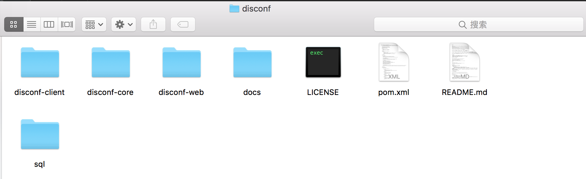

原文连接:https://www.cnblogs.com/bolingcavalry/p/11510255.html
Docker下的disconf实战全文链接
- 《Docker搭建disconf环境，三部曲之一：极速搭建disconf》；
- 《Docker搭建disconf环境，三部曲之二：本地快速构建disconf镜像》；
- 《Docker搭建disconf环境，三部曲之三：细说搭建过程》；
- 《Docker下使用disconf：极速体验》；
- 《Docker下使用disconf：细说demo开发》；
细说搭建过程
在前两章中，我们利用远程或本地的镜像，快速体验了本地启动disconf的过程，本章我们一起来分析和梳理整个定制和搭建过程，了解这些后，我们就能根据自己的需要来定制本地的disconf环境了。
以下两点请注意
- 本机环境已经安装了maven，并且把maven的bin目录配置到环境变量PATH下；
- 编译编译disconf源码时，要用到官方shell脚本，所以本次实践的操作系统建议用linux或mac，如果用windows，有三种方法：一个是把shell改成bat脚本，一个是用虚拟机的linux，还有一种是用在docker上搭建一个maven容器，把disconf源码放在这个容器下编译；
先分析再实战
首先把disconf环境依赖的所有server都列出来：
- redis<无需定制，用官方镜像>
- zookeeper<无需定制，用官方镜像>
- mysql<定制，创建库，表，导入初始化数据>
- tomcat<定制，包含业务war包，路径配置>
- nginx<定制，配置动静分离，包含静态web资源>
下一步，是理清各个server之间的依赖关系（例如tomcat上的业务要连接mysql数据库），依赖关系如下，搞清楚了这个就知道link参数怎么写了：
server的关系已经理清了，接下来就要开始定制mysql，tomcat，nginx这些镜像了，首先是准备材料，disconf是个开源的应用，我们可以在git上下载最新的源码，执行命令：
git clone git@github.com:knightliao/disconf.git下载完毕，打开文件夹，内容如下图：

接下来我们开始实战把，实战一共五个步骤，依次是： 定制mysql镜像 -> 定制tomcat镜像 -> 定制nginx镜像 -> 编写docker-compose脚本 -> docker-compose启动
定制mysql镜像
mysql定制：目的是让容器在创建时自动执行sql脚本，创建库和表，并导入初始化数据，在docker上实现数据库脚本自动执行的方法可以参照《让docker中的mysql启动时自动执行sql》一文，这里简单说一下步骤：
- 打开disconf源码文件夹，在disconf/disconf-web/sql目录下找到以下四个文件：
0-init_table.sql
1-init_data.sql
201512/20151225.sql
20160701/20160701.sql
- 新建一个目录mysql，把上面提到的四个sql文件复制到这个目录下，再新建一个名为install_data.sh的脚本，内容如下：
#!/bin/bash
mysql -uroot -p$MYSQL_ROOT_PASSWORD <<EOF
source $WORK_PATH/$FILE_0;
source $WORK_PATH/$FILE_1;
source $WORK_PATH/$FILE_2;
source $WORK_PATH/$FILE_3; 内容很简单，就是自动登录mysql，密码是docker启动的时候传入的环境变量，然后执行四个sql脚本文件
- 在mysql目录下新建Dockerfile文件，内容如下：
# Docker image of disconf mysql
# VERSION 0.0.1
# Author: bolingcavalry
#基础镜像使用daocloud.io/library/mysql:8
FROM daocloud.io/library/mysql:8
#作者
MAINTAINER BolingCavalry <zq2599@gmail.com>
#定义工作目录
ENV WORK_PATH /usr/local/work
#定义会被容器自动执行的目录
ENV AUTO_RUN_DIR /docker-entrypoint-initdb.d
#定义sql文件名
ENV FILE_0 0-init_table.sql
ENV FILE_1 1-init_data.sql
ENV FILE_2 20151225.sql
ENV FILE_3 20160701.sql
#定义shell文件名
ENV INSTALL_DATA_SHELL install_data.sh
#创建文件夹
RUN mkdir -p $WORK_PATH
#把数据库初始化数据的文件复制到工作目录下
COPY ./$FILE_0 $WORK_PATH/
COPY ./$FILE_1 $WORK_PATH/
COPY ./$FILE_2 $WORK_PATH/
COPY ./$FILE_3 $WORK_PATH/
#把要执行的shell文件放到/docker-entrypoint-initdb.d/目录下，容器会自动执行这个shell
COPY ./$INSTALL_DATA_SHELL $AUTO_RUN_DIR/
#给执行文件增加可执行权限
RUN chmod a+x $AUTO_RUN_DIR/$INSTALL_DATA_SHELL- 打开终端在mysql目录下执行以下命令，构建msql镜像：
docker build -t conf_mysql:0.0.1 .msql镜像构建成功
定制tomcat镜像
构建tomcat镜像时最重要的就是war包的生成，步骤如下：
- 创建两个文件夹，分别设置到ONLINE_CONFIG_PATH和WAR_ROOT_PATH这两个环境变量中，环境变量的设置方式在不同的操作系统下各不相同，我用的是mac，配置方式是在~/.bash_profile文件中加入以下内容（写完记得执行source ~/.bash_profile使环境变量在当前命令行窗口生效）：
ONLINE_CONFIG_PATH=/Users/zq2599/temp/201705/03/005/online-resources
WAR_ROOT_PATH=/Users/zq2599/temp/201705/03/005/war
export ONLINE_CONFIG_PATH
export WAR_ROOT_PATH/Users/zq2599/temp/201705/03/005/online-resources和/Users/zq2599/temp/201705/03/005/war都是刚刚新建的文件夹；
- 打开disconf的源文件的子目录disconf-web/profile/rd，里面的文件如下图：
把这些文件全部复制到ONLINE_CONFIG_PATH变量对应的目录下，在这个目录下依次修改jdbc-mysql.properties，redis-config.properties，zoo.properties这三个文件：
jdbc-mysql.properties的改动如下图，主要是数据url改成一个固定的名字mysqlhost，这个在docker run的时候要和link参数中的别名一致，还有就是数据库的用户名密码：
redis-config.properties的改动如下图，主要是host参数，也要和docker run时候的link参数的别名对齐，注意，这里要配置两个redis
zoo.properties的配置如下图，主要是host参数，也要和docker run时候的link参数的别名对齐：
把application-demo.properties文件改名为application.properties
好了，修改参数的事情就算做完了，有了这些和link参数一致的host配置，tomcat在运行的时候就能连接上对应的容器了。
现在我们用maven来编译和打包disconf的源码，用终端进入disconf源码的disconf-web子目录，执行以下命令开始编译和打包：
sh deploy/deploy.sh执行完毕后，在环境变量WAR_ROOT_PATH对应的目录下，可以看到编译和打包的结果，如下图：
新建一个名叫tomcat的文件夹，把上图中的disconf-web.war复制到这个文件夹下，再在这里新增一个server.xml文件，内容如下，用来指定tomcat服务的根路径对应的应用：
<?xml version='1.0' encoding='utf-8'?>
<Server port="8005" shutdown="SHUTDOWN">
<Listener className="org.apache.catalina.startup.VersionLoggerListener" />
<Listener className="org.apache.catalina.core.AprLifecycleListener" SSLEngine="on" />
<Listener className="org.apache.catalina.core.JasperListener" />
<Listener className="org.apache.catalina.core.JreMemoryLeakPreventionListener" />
<Listener className="org.apache.catalina.mbeans.GlobalResourcesLifecycleListener" />
<Listener className="org.apache.catalina.core.ThreadLocalLeakPreventionListener" />
<GlobalNamingResources>
<Resource name="UserDatabase" auth="Container"
type="org.apache.catalina.UserDatabase"
description="User database that can be updated and saved"
factory="org.apache.catalina.users.MemoryUserDatabaseFactory"
pathname="conf/tomcat-users.xml" />
</GlobalNamingResources>
<Service name="Catalina">
<Connector port="8080" protocol="HTTP/1.1"
connectionTimeout="20000"
redirectPort="8443" />
<Connector port="8009" protocol="AJP/1.3" redirectPort="8443" />
<Engine name="Catalina" defaultHost="localhost">
<Realm className="org.apache.catalina.realm.LockOutRealm">
<Realm className="org.apache.catalina.realm.UserDatabaseRealm"
resourceName="UserDatabase"/>
</Realm>
<Host name="localhost" appBase="webapps"
unpackWARs="true" autoDeploy="true">
<Valve className="org.apache.catalina.valves.AccessLogValve" directory="logs"
prefix="localhost_access_log." suffix=".txt"
pattern="%h %l %u %t "%r" %s %b" />
<Context path="" docBase="/usr/local/tomcat/webapps/disconf-web" debug="0" reloadable="true" crossContext="true"/>
</Host>
</Engine>
</Service>
</Server>这个配置信息和官方tomcat中的server.xml文件相比，其实只增加了下面这一个节点的内容：
<Context path="" docBase="/usr/local/tomcat/webapps/disconf-web" debug="0" reloadable="true" crossContext="true"/>在tomcat文件夹下新增Dockerfile文件，内容如下：
# Docker image of disconf tomcat
# VERSION 0.0.1
# Author: bolingcavalry
#基础镜像使用tomcat:7.0.77-jre8
FROM tomcat:7.0.77-jre8
#作者
MAINTAINER BolingCavalry <zq2599@gmail.com>
#定义工作目录
ENV TOMCAT_BASE /usr/local/tomcat
#复制配置文件
COPY ./server.xml $TOMCAT_BASE/conf/
#复制war包
COPY ./disconf-web.war $TOMCAT_BASE/webapps/
#给配置文件增加读权限
RUN chmod a+xr $TOMCAT_BASE/conf/server.xml
#删除默认的ROOT文件件
RUN rm -rf $TOMCAT_BASE/webapps/ROOT看的出Dockerfile做的事情并不多，就是复制war包，复制server.xml，删除默认的ROOT应用文件夹这些事情；
现在打开终端在tomcat目录下执行以下命令，构建tomcat镜像：
docker build -t conf_tomcat:0.0.1 .tomcat镜像构建成功！
构建nginx镜像
- 新建一个nginx目录，在里面新增一个nginx.conf文件，内容如下：
user nginx;
worker_processes 1;
error_log /var/log/nginx/error.log warn;
pid /var/run/nginx.pid;
events {
worker_connections 1024;
}
http {
include /etc/nginx/mime.types;
default_type application/octet-stream;
log_format main '$remote_addr - $remote_user [$time_local] "$request" '
'$status $body_bytes_sent "$http_referer" '
'"$http_user_agent" "$http_x_forwarded_for"';
access_log /var/log/nginx/access.log main;
sendfile on;
#tcp_nopush on;
keepalive_timeout 65;
#gzip on;
#include /etc/nginx/conf.d/*.conf;
upstream disconf {
server tomcathost:8080;
}
server {
listen 80;
server_name localhost;
access_log logs/disconf_access.log;
error_log logs/disconf_error.log;
location / {
root /usr/local/work/html;
if ($query_string) {
expires max;
}
}
location ~ ^/(api|export) {
proxy_pass_header Server;
proxy_set_header Host $http_host;
proxy_redirect off;
proxy_set_header X-Real-IP $remote_addr;
proxy_set_header X-Scheme $scheme;
proxy_pass http://disconf;
}
}
}主要的配置有三点：
将默认的/etc/nginx/conf.d/*.conf配置注释掉；
增加tomcat的host信息，“tomcathost”和后面docker run的link参数的别名保持一致;
动静分离的配置，请求url中如果带有api和export，nginx就把请求转发到tomcathost:8080，其他的请求直接访问nginx服务器的/usr/local/work/html文件夹；
- 在环境变量WAR_ROOT_PATH对应的目录下，有个html文件夹如下图红框位置，这是web工程全部静态文件，把这个文件夹复制到刚才新建的nginx目录下：
- 在nginx文件夹下新增Dockerfile文件，内容如下：
# Docker image of disconf nginx
# VERSION 0.0.1
# Author: bolingcavalry
#基础镜像使用nginx:stable
FROM nginx:stable
#作者
MAINTAINER BolingCavalry <zq2599@gmail.com>
#定义工作目录
ENV WORK_PATH /usr/local/work/html
#定义nginx配置文件所在目录
ENV NGINX_CONF_DIR /etc/nginx
#定义nginx配置文件名称
ENV NGINX_CONF_FILE_NAME nginx.conf
#创建工作文件夹
RUN mkdir -p $WORK_PATH
#创建nginx日志文件夹
RUN mkdir -p /etc/nginx/logs/
#复制nginx配置文件
COPY ./$NGINX_CONF_FILE_NAME $NGINX_CONF_DIR/
#复制网页的静态资源文件
COPY ./html $WORK_PATH/
#给配置文件增加读权限
RUN chmod a+xr $NGINX_CONF_DIR/$NGINX_CONF_FILE_NAME- 现在打开终端在nginx目录下执行以下命令，构建nginx镜像：
docker build -t conf_nginx:0.0.1 .nginx镜像构建成功！
编写docker-compose脚本
新增一个docker-compose.yml文件(位置无所谓)，内容如下：
version: '2'
services:
disconf_redis_1:
image: daocloud.io/library/redis
restart: always
disconf_redis_2:
image: daocloud.io/library/redis
restart: always
disconf_zookeeper:
image: zookeeper:3.3.6
restart: always
disconf_mysql:
image: conf_mysql:0.0.1
environment:
MYSQL_ROOT_PASSWORD: 123456
restart: always
disconf_tomcat:
image: conf_tomcat:0.0.1
links:
- disconf_redis_1:redishost001
- disconf_redis_2:redishost002
- disconf_zookeeper:zkhost
- disconf_mysql:mysqlhost
restart: always
disconf_nginx:
image: conf_nginx:0.0.1
links:
- disconf_tomcat:tomcathost
ports:
- "80:80"
restart: always按照我们最初梳理的依赖关系，启动两个redis官方镜像，一个zookeeper官方镜像，再启动定制的msyql镜像，然后tomcat启动并通过link关联redis，zookeeper，mysql等容器，最后是定制的nginx启动，link关联tomcat，并且nginx容器的80端口映射到当前电脑的80端口；
启动所有容器
在docker-compose.yml文件所在的目录下，执行命令：
docker-compose up -d终端会显示正在启动各个容器，如下图，每个容器的名称会被docker-compose加上前缀和后缀：
tomcat的应用启动需要一点时间，我们可以通过docker logs -f disconf_disconf_tomcat_1命令来查看tomcat启动日志，disconf_disconf_tomcat_1是容器名称，如上图中的红框所示。
启动完毕后，在浏览器上输入localhost，可以看见熟悉的disconf登录页面，用户名admin，密码admin，登录进去试试吧：
至此，disconf环境搭建三部曲已经结束，从体验到亲手一步一步配置都经历了，我们可以按照自己的要求为自己定制一个disconf环境了。
后面的文章中，我们一起来实战一下disconf系统的使用吧，体验一下动态配置给业务带来的便利。
欢迎关注我的公众号